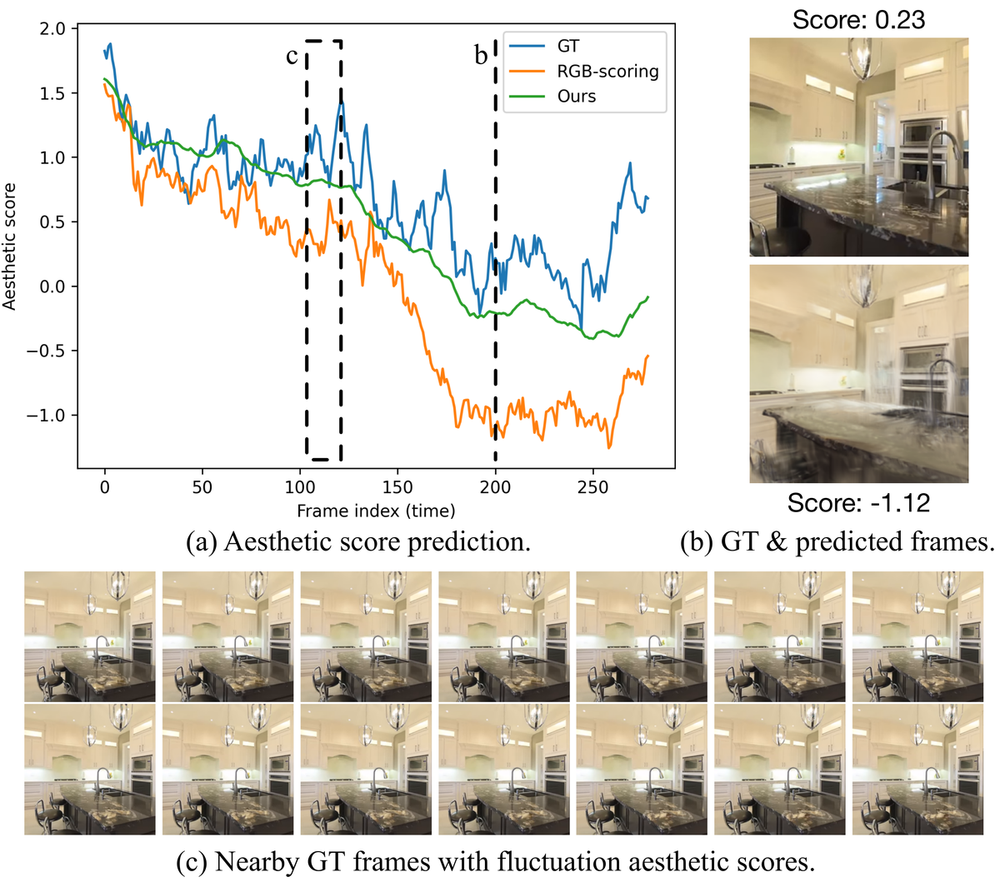
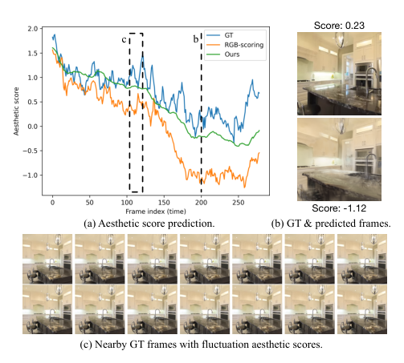
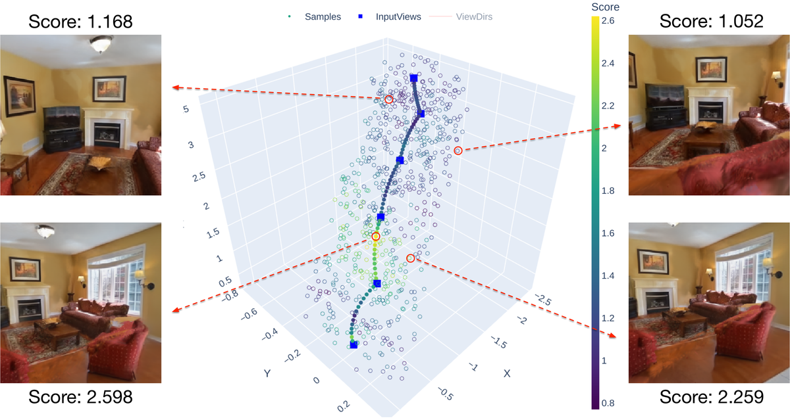
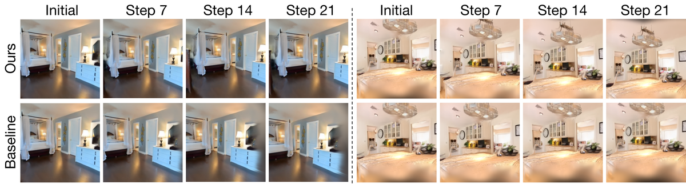
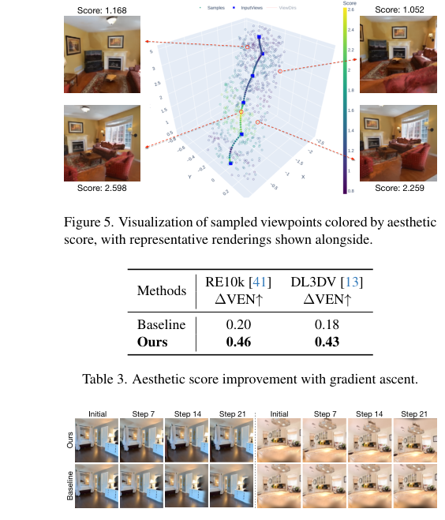

Aesthetic
简单摘要
场景的美学质量很大程度上取决于相机的视角。现有的美学视点建议方法要么是单视图调整（在不了解场景几何形状的情况下从单个图像预测有限的相机调整），要么是 3D 探索方法，这些方法依赖于密集捕获或预构建的 3D 环境以及昂贵的强化学习 (RL) 搜索。在这项工作中，我们引入了 3D 美学场的概念，它可以通过稀疏捕获在 3D 中进行基于几何的美学推理，从而与昂贵的 RL 搜索相比，允许有效的观点建议。我们选择使用前馈 3D Gaussian Splatting 网络来学习这个 3D 美学领域，该网络将高级美学知识从预训练的 2D 美学模型提炼到 3D 空间中，从而仅从稀疏的输入视图中即可对新颖的观点进行美学预测。
在此领域的基础上，我们提出了一种两阶段搜索管道，将粗视点采样与基于梯度的细化相结合，无需密集捕获或强化学习探索即可有效识别美观的视点。大量的实验表明，与现有方法相比，我们的方法始终提出具有优越框架和构图的观点，为 3D 感知美学建模建立了新的方向。


简而言之，这篇论文关注的核心是：场景的美学质量很大程度上取决于相机的视角。现有的美学视点建议方法要么是单视图调整（在不了解场景几何形状的情况下从单个图像预测有限的相机调整），要么是 3D 探索方法，这些方法依赖于密集捕获或预构建的 3D 环境以及昂贵的强化学习 (RL) 搜索。在这项工作中，我们引入了 3D 美学场的概念，它可以…
取景和构图在图像美学中起着核心作用。同一 3D 场景可能会显得引人入胜或尴尬，这仅取决于相机的视角，因为空间关系和视角会随着观看位置的不同而变化。这使得美学本质上依赖于 3D。经验丰富的摄影师在取景时，通过多角度观察，直观地推理空间布局，形成内在的场景美感，预测视觉吸引力如何随视角变化。这可以被视为绘制不同观点的审美变化的心理地图。使机器能够以类似的方式进行推理——从一些观察中推断出空间变化的场景美学，以提出有吸引力的观点——不仅有利于个人摄影，而且有利于 VR/AR 和自主系统中的视图选择/规划。
现有方法主要关注单视图调整，通过预测有限的相机运动来细化单个图像。尽管它们可以增强局部取景，但它们缺乏对底层场景几何形状的认识，从而使它们的推理仅限于锚点视图周围的狭窄邻域。最近的作品尝试使用生成模型将更广泛的观点变化纳入美学建模中。然而，它们依赖于单一视图的幻觉内容，因此无法确保与真实场景的几何一致性。这凸显了对基于场景几何的 3D 感知解决方案的需求，以便在 3D 空间中观察到的视图之外进行可靠的美学推理。
在另一项工作中，3D 探索方法在空间环境中明确运行，采用强化学习 (RL) 或遗传算法来搜索有吸引力的观点。然而，他们假设可以从真实或现成的虚拟 3D 环境（模拟、预训练的 NeRF）获得密集、高质量的视觉输入，而这些环境的构建成本高昂，并且需要大量的数据收集。此外，他们基于强化学习的解决方案涉及在环境中进行成本高昂的逐步探索。这些限制需要一种解决方案来减轻对密集捕获的依赖，并能够实现高效的美学推理，而无需在现实世界中进行迭代的物理调整。
为了解决这些限制，我们建议通过学习 3D 美学领域，将审美感知与 3D 几何理解统一起来，从而能够从稀疏观察中有效推断场景美学。该领域本质上编码了空间变化的美学线索，支持 3D 中基于几何的美学推理。就像一个熟练的摄影师……
核心创新
综合引言与方法部分，这篇论文的核心创新可以概括为以下几方面：
1）问题定义与研究动机
取景和构图在图像美学中起着核心作用。同一 3D 场景可能会显得引人入胜或尴尬，这仅取决于相机的视角，因为空间关系和视角会随着观看位置的不同而变化。这使得美学本质上依赖于 3D。经验丰富的摄影师在取景时，通过多角度观察，直观地推理空间布局，形成内在的场景美感，预测视觉吸引力如何随视角变化。这可以被视为绘制不同观点的审美变化的心理地图。使机器能够以类似的方式进行推理——从一些观察中推断出空间变化的场景美学，以提出有吸引力的观点——不仅有利于个人摄影，而且有利于 VR/AR 和自主系统中的视图选择/规划。现有方法主要关注单视图调整，通过预测有限的相机运动来细化单个图像。尽管它们可以增强局部取景，但它们缺乏对底层场景几何形状的认识，从而使它们的推理仅限于锚点视图周围的狭窄邻域。最近的作品尝试使用生成模型将更广泛的观点变化纳入美学建模中。然而，它们依赖于单一视图的幻觉内容，因此无法确保与真实场景的几何一致性。这凸显了对基于场景几何的 3D 感知解决方案的需求，以便在 3D 空间中观察到的视图之外进行可靠的美学推理。在另一项工作中，3D 探索方法在空间环境中明确运行，采用强化学习 (RL) 或遗…
2）方法框架与核心模块
问题陈述。我们的目标是为从稀疏输入视图观察到的给定 3D 场景识别美观的视点。我们将其表述为找到在连续视图空间上最大化预测美学分数的相机姿势：由于直接优化很棘手，因为它需要来回 2D 投影和评估，因此我们建议通过学习 3D 美学领域来近似这一目标，该领域定义了从相机姿势到美学质量的连续映射，同时基于场景几何。为了学习这个领域，我们将预训练的 2D 美学模型中的美学知识提炼到前馈高斯 Splatting 框架中，以从稀疏输入视图中重建每高斯几何和美学特征。蒸馏场能够以新颖的视角呈现美学特征，并由美学解码器进行评估，以评估框架和构图。为了有效地探索 3D 场景以获取视点建议，我们引入了一个两阶段搜索管道：(1) 沿输入轨迹及其周围对候选视点进行粗采样，然后进行美学评分以选择最佳候选点，以及 (2) 基于梯度的局部细化优化。整体框架如图：framework所示。提炼 3D 美学场前馈 3D 高斯泼溅。我们在前馈高斯 Spatting 模型的基础上构建了我们的框架，该模型在单个前向传递中从稀疏输入视图中预测每像素高斯表示。具体来说，给定输入视图和相应的相机姿势，多视图变换器提取多视图特征。然…
3）实验设计与工程价值
实验设置数据集。我们使用 RealEstate10k (RE10k) 和 DL3DV 进行训练和评估。 RE10k主要包含室内视频，而DL3DV涉及更多样化的场景。两者在每一帧都有相机参数。更多详细信息可以在补充材料中找到。实施细节。我们在 Pytorch 中实现我们的框架，使用 DepthSplat 作为前馈高斯 Splatting 主干。我们使用 VEN 模型作为提炼美学表征的老师。 VEN是一个CNN模型，我们使用层( )中的特征作为蒸馏目标。继 Xu 之后，我们使用 RE10k 和 DL3DV 的图像分辨率。在训练过程中，我们随机采样 RE10k 的 2 个输入视图和 DL3DV 的 2 到 6 个输入视图，遵循与 Xu 相同的协议。更多实施和培训细节可以在补充材料中找到。搜索管道配置。在推理时，我们通过两阶段方法搜索最佳视图。在第 1 阶段，在插值轨迹的每个段内，我们均匀采样…
技术细节
下面按照论文的方法章节结构展开，重点说明模型的关键模块、公式设计和训练策略。
问题陈述。我们的目标是为从稀疏输入视图观察到的给定 3D 场景识别美观的视点。我们将其表述为找到在连续视图空间上最大化预测美学分数的相机姿势：由于直接优化很棘手，因为它需要来回 2D 投影和评估，因此我们建议通过学习 3D 美学领域来近似这一目标，该领域定义了从相机姿势到美学质量的连续映射，同时基于场景几何。为了学习这个领域，我们将预训练的 2D 美学模型中的美学知识提炼到前馈高斯 Splatting 框架中，以从稀疏输入视图中重建每高斯几何和美学特征。蒸馏场能够以新颖的视角呈现美学特征，并由美学解码器进行评估，以评估框架和构图。为了有效地探索 3D 场景以获取视点建议，我们引入了一个两阶段搜索管道：(1) 沿输入轨迹及其周围对候选视点进行粗采样，然后进行美学评分以选择最佳候选点，以及 (2) 基于梯度的局部细化优化。整体框架如图：framework所示。提炼 3D 美学场前馈 3D 高斯泼溅。我们在前馈高斯 Spatting 模型的基础上构建了我们的框架，该模型在单个前向传递中从稀疏输入视图中预测每像素高斯表示。具体来说，给定输入视图和相应的相机姿势，多视图变换器提取多视图特征。然后，使用平面扫描聚合将这些特征融合到相邻视图中，并利用单目深度线索进行丰富，以预测每像素深度，从而确定每个 3D 高斯的中心。 DPT 头最终回归剩余的每高斯参数，包括协方差、不透明度和颜色。新颖的视图图像可以通过高斯溅射从 3D 高斯渲染。该主干网提供了可微分且高效的 3D 表示，我们将其扩展以构建美学领域。直接 RGB 评分及其不稳定性。考虑到前馈高斯泼溅骨干，视点建议的一个直接解决方案是渲染新颖的视图并使用预训练的美学模型直接对其进行评分。然而，这种幼稚的方法面临着两个关键挑战。首先，美学模型对微小的像素变化高度敏感，即使对于相邻视图也会产生波动的分数（见图：nva_1）。
这是因为现有数据集缺乏 3D 附近视点的注释，因此模型在训练中没有看到这种变化。其次，在新颖的视图中渲染伪影可能会影响美学预测并误导优化（参见图：nva_1）。为了解决这些问题，我们通过将美学表征提炼成 3D 高斯函数，从像素级评分转向特征级推理。在这个潜在特征空间中进行操作可以增强对低级伪像的鲁棒性，并增强多视图空间一致性，从而使附近视图之间的美学变化更加平滑。请参阅 sec:nva 了解更多详细信息。美学壮举……
$$ \mathbf P^* = \arg\max_\mathbf P score(\mathbf P). $$
公式：\mathbf P^* = \arg\max_\mathbf P 分数(\mathbf P). 上下：辐射上升（右下）。图* 提议的方法问题陈述。我们的目标是为从稀疏输入视图观察到的给定 3D 场景识别美观的视点。我们将其表述为寻找在连续视图空间上最大化预测美学分数的相机姿势：由于直接操作......
$$ \mathbf P_{t+1}=\mathbf P_{t} + \eta \nabla_{\mathbf P}score(\mathbf P_{t}), $$
公式：\mathbf P_{t+1}=\mathbf P_{t} + \eta \nabla_{\mathbf P}score(\mathbf P_{t}), 上下文：所选集涵盖了不同的观点。第 2 阶段：基于梯度的细化。从第一阶段获得的候选视点开始，我们直接对相机姿势进行局部优化，以进一步最大化它们的美学分数。具体来说，每个相机姿势都通过 3D 平移和方向进行参数化，...



把全文方法串起来看，这篇论文的逻辑基本都遵循同一条主线：先把输入组织成更容易处理的表示，再通过模型结构和损失函数把这个表示推向目标输出，最后用可视化与数值实验共同证明该设计有效。
实验结论
实验部分主要回答两个问题：第一，方法是否真的优于已有基线；第二，这种优势来自哪一个设计决策。
实验设置数据集。我们使用 RealEstate10k (RE10k) 和 DL3DV 进行训练和评估。 RE10k主要包含室内视频，而DL3DV涉及更多样化的场景。两者在每一帧都有相机参数。更多详细信息可以在补充材料中找到。实施细节。我们在 Pytorch 中实现我们的框架，使用 DepthSplat 作为前馈高斯 Splatting 主干。我们使用 VEN 模型作为提炼美学表征的老师。 VEN是一个CNN模型，我们使用层( )中的特征作为蒸馏目标。继 Xu 之后，我们使用 RE10k 和 DL3DV 的图像分辨率。在训练过程中，我们随机采样 RE10k 的 2 个输入视图和 DL3DV 的 2 到 6 个输入视图，遵循与 Xu 相同的协议。更多实施和培训细节可以在补充材料中找到。搜索管道配置。在推理时，我们通过两阶段方法搜索最佳视图。在第 1 阶段，在插值轨迹的每个段内，我们均匀采样 16 个相机姿势，在每个相机姿势周围，我们进一步采样 8 个相邻姿势。我们将前 2 名候选者作为下一阶段的输入。在第 2 阶段，我们使用步长为 0.01 的 Adam 优化器并更新 25 步。新视角的审美预测我们首先评估我们的模型在未见过的视点预测审美质量的能力，以验证学习到的 3D 审美领域，然后再将其应用于视点建议。具体来说，我们将预测的审美分数与教师审美模型的真实分数进行比较，并根据 RGB 评分基线进行基准测试。对于 RE10k 和 DL3DV 测试分割中的每个场景，我们使用 2、4 和 6 个输入视图来构建美感场并预测剩余帧的美感得分，RE10k 使用整个视频剪辑（每个约 250 帧），DL3DV 使用 100 帧。继 Xu 之后，我们在 RE10k 和 DL3DV 中进行训练，并在两种分辨率下进行评估以评估泛化能力。与教师分数的相关性。我们使用两个标准指标来计算新颖视图下的预测审美分数和教师审美分数之间的相关性：皮尔逊线性相关系数（PLCC）和斯皮尔曼等级相关系数（SRCC），对每个场景进行计算，然后求平均值。如 tab:correlation 所示，在所有设置中，我们的审美场与老师的相关性明显高于 RGB 评分基线，这表明蒸馏场产生了更稳定、更忠实的审美预测。
如前所述，直接 RGB 评分对渲染伪影高度敏感。此外，教师分数本身会在几乎相同的成分的附近真实视图中波动，因此这些定量结果是最好的解释……

- 方法在核心指标上的优势与结构设计和训练目标直接相关；
- 消融实验表明，拿掉关键模块后性能与结果质量都有明显回落；
- 论文不仅比较数值，也关注可视化质量、稳定性和泛化能力等更贴近真实使用的信号。
理解评价
我们提出了一种新颖的 3D 感知美学视点建议框架，该框架通过前馈 3D 高斯分布学习 3D 美学领域，从而实现基于几何的美学推理和从稀疏输入视图中有效发现美学视点。尽管有效，我们的框架仍有改进的空间。首先，它依靠相机姿势来构建审美场。虽然此类信息可以从 COLMAP 获得，并且通常在机器人/无人机和智能手机中可用，但无姿势变体将扩大我们方法的适用性。这可以通过结合无姿态方法的最新进展来实现。其次，审美场的质量取决于重建几何的准确性，这受到骨干网能力和输入覆盖范围的影响。
虽然前者可以通过更强的几何主干来改进，但后者可以通过选择视图以确保足够的场景覆盖来解决。第三，我们的观点搜索仅限于初始观察支持的区域。一个有前途的扩展是一个主动感知循环，它可以在有希望的方向上获取额外的视图，以扩展美学领域并扩大可行的搜索空间。 page1figure0table0SfigureStablesection0Ssectionsubsection0Ssection.subsection
如果把它当成研究参考，建议重点关注三件事：第一，这套方法真正依赖的归纳偏置是什么；第二，实验中真正拉开差距的模块是哪一个；第三，它的局限究竟来自数据、算力还是监督信号本身。
以下相关论文可以作为进一步追踪的入口：